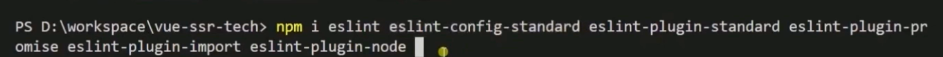
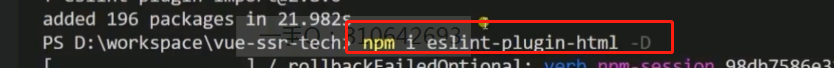
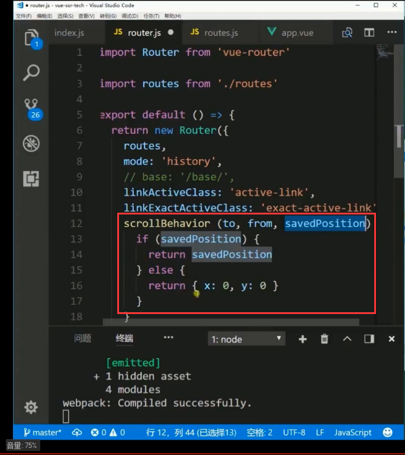

| 合并webpack文件 | |||
| css热更替 |
无法进行热更替 |
修改成这样就可以了 |
|
| 每次build时删除dist目录 | |||
| html页面热重载 |  |
||
| loader,可以使用不同的模块去解析不同的代码 |
preloader用于在loader解析之前先解析一次代码,比如使用typeScript,preloader先解析成js,然后loader再次解析 |
||
| 隐藏css类名 |  |
||
| 安装eslint |  |

使eslint可以识别 |
|
 |
预处理,在vue-loader之前处理es-lint |
||
| 编辑器通用配置.editconfig |
vscode可以安装插件实现,用于配置编辑器的一些行为,比如文件末尾加上一个空行 |
||
| github钩子,当代码没有通过es-lint时,不允许代码提交 | |||
| cannot read property 'eslint' of undefined报错方法解决 |
解决方法:一般是相对应的loader没有被安装,安装即可 |
||
| 生命周期 |
|
|
|
| computed |
该方法有缓存,除非计算的结果有变化,否则不会每次都没渲染时都重新计算 第一个handler：其值是一个回调函数。即监听到变化时应该执行的函数。 第二个是deep：其值是true或false；确认是否深入监听。（一般监听时是不能监听到对象属性值的变化的，数组的值变化可以听到。） 第三个是immediate：其值是true或false；确认是否以当前的初始值执行handler的函数。 |
主要用于跟踪显示数据的变化 |
|
| watch |
如果不设置handler的话,首次是不会计算的 deep:查看obj内部的变化,遍历object会降低性能,下面的写法可以解决性能问题 |
主要用于观察某一变量,一旦变化,发送ajax请求数据 |
|
| props属性 |
还可以使用验证方法 |
还可以返回对象 |
|
| data属性 |
大部分情况下是return一个function,因为如果直接写data:{}的话,组件如果被调用多次,data值是共享的,所以要return出一个object |
||
| 解决多层级组件之间的获取引用的方法 | |||
| on和nativeOn | on绑定的事件需要$emit触发,但是nativeOn直接绑定到组件对应的元素或者元素上,猜测是调用的原生事件 | ||
| domProps | |||
| 路由切换使用pushState还是hash | |||
| 统一配置路径(url前缀) | |||
| 路由激活时添加的class |
linkActiveClass:路由部分匹配时添加该class如/login linkExactActiveClass路由全部匹配时添加该类/login/exact |
||
| webpack配置输入错误路径时的返回页 | |||
| 记录页面的滚动行为,可以让某刻路由的页面每次都滚动到一个指定位置 |  | ||
| 处理不支持pushState方法的浏览器 |
true:当vue发现浏览器不知道pushState时,则使用hash方式处理路由 false,始终使用pushState |
||
| 路由中配置一些自定义信息以便读取 | |||
| 将path中:id当做prpo传给子组件 | |||
| 使内容显示在指定的router-view中 | |||
| 路由首守卫 |
1.全局钩子 |
可用于全局判断登录状态 |
针对某一路由的路由守卫 组件内守卫 全局守卫最先进入,最后退出 next可以接收一个回调,vm就是组件被创建之后的this对象 |
| 生命周期补充 | 如果路由相同但是由于id之类的改变导致路由内容显示的不同,这样muonted生命周期不会再次运行,如果想根据路由变化执行某些操作,需要使用beforeRouteUpdate钩子或者watch(比较麻烦) | ||
| 异步组件(懒加载) |
注意,该方法需要使用插件 |
||
| 在bable中使用未定稿的es7语法 | |||
| mapState | |||
| 禁止在开发环境中在外部修改store的值 |  |
||
| vuex的命名空间 |
需要添加namespaced: true, 否则mutations默认挂在到全局当中 调用方法: |
||
| vuex动态注册模块 | |||
| store的热更替 | |||
| vuex(store)添加插件 | |||
| 图解vuex | |||
| 问题 | vuex dispatch 和 commit区别 | ||
| SSR | 服务端渲染只能使用nodejs完成,视频中使用的是koa,需要安装右边的插件才能完成功能 | ||
| nodejs修改后自动重启 | |||
| 一次启动两个node进程 | |||
| 服务端渲染修改meta信息 | |||
| 禁止chrome密码自动填充 |
输入框中添加左边属性 |
||
| axios拦截器 | 可用于实现全局loading动画 | vue+axios+element ui 实现全局loading加载 |